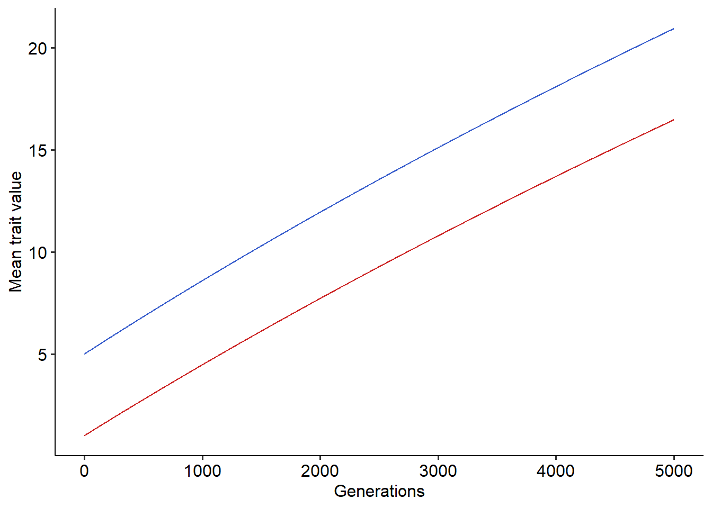

7 Exercise: Simulating coevolution mediated by a trait matching mechanism
7.1 Simulating coevolution of species under victim-exploiter interactions
In our theoretical lecture we studied how we can use Lande’s equation to model the coevolution of two species whose interaction depends on the matching of the traits of the species. Here, we will perform numerical simulations of this coevolutionary model to gain intuition about how coevolution can shape patterns of continuous traits in populations interacting species. In the lecture, we started with an example of victim-exploiter interaction, where the fitness of individuals of one of the species increase with interactions, but the fitness of individuals of the second species decrease. We will begin with this type of interaction. For interactions between a victim and an exploiter, we first assumed that the fitness of individuals of the victim species decreases when their traits, \(z_x\), match the traits of individuals of the exploiter species, \(z_y\). Similarly, we assumed that the fitness of individuals of the exploiter species increases the higher their trait matching with individuals of the victim one. Then, we approximated the mean fitness of the populations of the victim and exploiter species, as follows:
\[\begin{aligned} \overline{W_x}(\overline{z_{x}}) &\approx 1-s_{x}e^{-\alpha[(\overline{z}_x-\overline{z}_y)^2+\sigma^2_{xy}]} \\ \overline{W_y}(\overline{z_{y}}) &\approx 1+s_{y}e^{-\alpha[(\overline{z}_x-\overline{z}_y)^2+\sigma^2_{xy}]} \end{aligned}\]
where \(\sigma^2_{xy}=\sigma^2_{x}+\sigma^2_{y}\) corresponds to the sum of the variance of the traits of the victim and exploiter species, respectively. Using these two functions for the mean fitness of the victim and exploiter species, we derived the two selection gradients, \(\frac{\partial ln\overline{W_x}}{\partial \overline{z}_x}\) and \(\frac{\partial ln\overline{W_y}}{\partial \overline{z}_y}\) underlying the two functions, as follows:
\[\begin{aligned} \frac{\partial ln\overline{W_x}}{\partial \overline{z}_x} &= \frac{2\alpha s_{x}e^{-\alpha[(\overline{z}_x-\overline{z}_y)^2+\sigma^2_{xy}]}}{1-s_{x}e^{-\alpha[(\overline{z}_x-\overline{z}_y)^2+\sigma^2_{xy}]}}(\overline{z}_x-\overline{z}_y) \\ \frac{\partial ln\overline{W_y}}{\partial \overline{z}_y} &= \frac{2\alpha s_{y}e^{-\alpha[(\overline{z}_x-\overline{z}_y)^2+\sigma^2_{xy}]}}{1+s_{y}e^{-\alpha[(\overline{z}_x-\overline{z}_y)^2+\sigma^2_{xy}]}}(\overline{z}_x-\overline{z}_y) \end{aligned}\]
As we did in the exercise section of Lande’s equation, we can check or compute the derivatives corresponding to the selection gradient symbolically using R:
## sx * (exp(-a * ((zx - zy)^2 + var_xy)) * (a * (2 * (zx - zy))))/(1 -
## sx * exp(-a * ((zx - zy)^2 + var_xy)))## sy * (exp(-a * ((zx - zy)^2 + var_xy)) * (a * (2 * (zx - zy))))/(1 +
## sy * exp(-a * ((zx - zy)^2 + var_xy)))which we can see match the selection gradients that we computed for the victim and exploiter species.
With the selection gradients in hand, we just need to set up our numerical simulations. To perform the numerical simulations we will follow the same steps as in the exercise section where we simulated Lande’s equation. The only difference being that now we have two coupled equations. Once more, we will set up a for loop to iterate over the equations and will go through the following steps:
Define a function that takes as input parameters of the model. In our case these will be \(s_{x}\), \(s_{y}\), \(\alpha\), \(\sigma^2_{x}\), \(\sigma^2_{y}\), \(h^2\), the maximum number of time steps of the model (\(t_{max}\)), and initial values of \(\overline{z}_{x}\) and \(\overline{z}_{y}\).
In a for loop, set the value of \(\overline{z}_{x}\) and \(\overline{z}_{y}\) to the one at the current time step, \(t\)
Within this for loop, compute the selection gradient of the populations using the equations that we found.
Still within the loop, update the values of \(\overline{z}_{x}\) and \(\overline{z}_{y}\) using Lande’s equation and the selection gradients that we computed.
Return a data frame with the results.
These steps are highlighted in the block of code below:
# Step (1)
#Defining a function that takes as input the following parameters:
#sx=Overall strength of ecological interactions on fitness of the victim species
#sy=Overall strength of ecological interactions on fitness of the exploiter species
#a=Parameter alpha of the model
#h=Heritability of the traits of both the victim and exploiter species (assumed to be equal)
#v_zx=Variance in the trait of the victim species
#z_vy=Variance in the trait of the exploiter species
#tmax=Maximum number of time steps (generations) of the simulation
#z0_x=Initial mean trait value of the population of the victim species
#z0_y=Initial mean trait value of the population of the exploiter species
coevo<-function(sx, sy, a, h, v_zx, v_zy, tmax, z0_x, z0_y){ #Step (1)
dzx = c() #Creating vector to store values of the mean trait value of the population of the victim species
dzy = c() #Creating vector to store values of the mean trait value of the population of the exploiter species
dzx[1] = z0_x #Setting initial mean trait value in the population of the victim species
dzy[1] = z0_y #Setting initial mean trait value in the population of the exploiter species
#For loop to iterate over the equation - here we will use Lande's equation
for(t in 1:(tmax-1)){
# Step (2)
zx = dzx[t] #Setting the mean trait value at the current generation of the of the population of the victim species
zy = dzy[t] #Setting the mean trait value at the current generation of the of the population of the exploiter species
# Step (3)
mx=sx*2*a*(exp(-a*((zx-zy)^2+v_zx+v_zy)))/(1-sx*exp(-a*((zx-zy)^2+v_zx+v_zy)))
my=sy*2*a*(exp(-a*((zx-zy)^2+v_zx+v_zy)))/(1+sy*exp(-a*((zx-zy)^2+v_zx+v_zy)))
dlnw1 = mx*(zx-zy)
dlnw2 = my*(zx-zy)
# Step (4)
dzx[t+1]=zx + h*v_zx*dlnw1 #Using Lande's equation to compute mean trait value at the next generation of the population of the victim species
dzy[t+1]=zy + h*v_zy*dlnw2 #Using Lande's equation to compute mean trait value at the next generation of the population of the exploiter species
}
r=data.frame(dzx, dzy, t=1:tmax) # Step (5), creating a data frame with mean trait values over time of the two species
return(r)
}Now we have a function that simulate the coevolution of a victim and an exploiter species when interactions are mediated by a trait matching mechanism. So, we can use this function and then visualize the results:
#Running the coevolutionary model
r=coevo(sx=0.1, sy=0.1, a=0.1, tmax=5000, z0_x=5, z0_y=1, h=0.5, v_zx=0.5, v_zy=0.5)
#Plotting the results
library(ggplot2)
library(ggpubr)
ggplot()+
geom_line(data=r, aes(x=t, y=dzx), color="royalblue3")+ # Mean trait value for victims, in blue
geom_line(data=r, aes(x=t, y=dzy), color="firebrick3")+ #Mean trait value for exploiters, in red
xlab("Generations")+ylab("Mean trait value")+
theme_pubr()
Using the function that simulates coevolution, try to explore how the coevolutionary dynamics changes under different parameter values. Try to answer the following question:
How different values of \(s_{x}\) and \(s_{y}\) modify the outcome of coevolution?
What would be a mechanism that could modify this outcome so that it is more similar to the dynamics for matching alleles that we simulated in the previous exercise section?
7.2 Simulating the coevolution of mutualistic species
As we did with our coevolutionary model of morph/allele frequencies, we can modify the fitness functions to model mutualistic interactions. Here, the only modification that we need to perform is to change the negative sign to a positive sign for the effects of ecological interactions on the fitness of one of the species, as follows:
\[\begin{aligned} \overline{W_x}(\overline{z_{x}}) &\approx 1+s_{x}e^{-\alpha[(\overline{z}_x-\overline{z}_y)^2+\sigma^2_{xy}]} \\ \overline{W_y}(\overline{z_{y}}) &\approx 1+s_{y}e^{-\alpha[(\overline{z}_x-\overline{z}_y)^2+\sigma^2_{xy}]} \end{aligned}\]
These two expressions for the mean fitness of the species leads to the following selection gradients:
\[\begin{aligned} \frac{\partial ln\overline{W_x}}{\partial \overline{z}_x} &= \frac{2\alpha s_{x}e^{-\alpha[(\overline{z}_x-\overline{z}_y)^2+\sigma^2_{xy}]}}{1+s_{x}e^{-\alpha[(\overline{z}_x-\overline{z}_y)^2+\sigma^2_{xy}]}}(\overline{z}_y-\overline{z}_x) \\ \frac{\partial ln\overline{W_y}}{\partial \overline{z}_y} &= \frac{2\alpha s_{y}e^{-\alpha[(\overline{z}_x-\overline{z}_y)^2+\sigma^2_{xy}]}}{1+s_{y}e^{-\alpha[(\overline{z}_x-\overline{z}_y)^2+\sigma^2_{xy}]}}(\overline{z}_x-\overline{z}_y) \end{aligned}\]
that we can, once more, verify using R:
## -(sx * (exp(-a * ((zx - zy)^2 + var_xy)) * (a * (2 * (zx - zy))))/(1 +
## sx * exp(-a * ((zx - zy)^2 + var_xy))))## sy * (exp(-a * ((zx - zy)^2 + var_xy)) * (a * (2 * (zx - zy))))/(1 +
## sy * exp(-a * ((zx - zy)^2 + var_xy)))where in the equation that we derived for \(\frac{\partial ln\overline{W_x}}{\partial \overline{z}_x}\) we distributed the “-” in front of the expression for the equivalence \(-(\overline{z}_x-\overline{z}_y)=(\overline{z}_y-\overline{z}_x)\).
For this section, your task will be to adapt the function that simulate coevolution to incorporate the selection gradients for mutualisms. Then, simulate the coevolutionary dynamics and try to answer the following question:
When mutualistic species coevolve, what is the only possible outcome?
What would be a possible biological mechanism that could change this outcome? As we did in the previous exercise section, think about a mechanism that we could include as an additional assumption in the fitness of individuals of the mutualistic species.
7.3 Incorporating other sources of selective pressure in the environment
For this section we will incorporate other sources of selective pressures in our model of coevolution of two mutualistic species. To do so, we will use a different approach than starting with the fitness function and deriving the selection gradient. Rather, we will directly incorporate another source of selective pressure in the selection gradient.
First, we will simplify the selection gradient that we derived when we have purely mutualistic interactions. In the selection gradients, the terms \(\frac{2\alpha s_{x}e^{-\alpha[(\overline{z}_x-\overline{z}_y)^2+\sigma^2_{xy}]}}{1+s_{x}e^{-\alpha[(\overline{z}_x-\overline{z}_y)^2+\sigma^2_{xy}]}}\) and \(s_{y}e^{-\alpha[(\overline{z}_x-\overline{z}_y)^2+\sigma^2_{xy}]}}{1+s_{y}e^{-\alpha[(\overline{z}_x-\overline{z}_y)^2+\sigma^2_{xy}]}}\) control the strength of mutualistic selection. For simplicity, we will assume that this term is a constant for both species, \(m_{x}\) and \(m_{y}\), that controls the contribution of mutualisms as a source of selection for species \(x\) and \(y\). Next, we will assume that the remaining sources contribute with \((1-m_{x})\) and \((1-m_{y})\) as selective pressures. For these other sources, we will assume that they favor an optimal trait value, \(\theta_{x}\) and \(\theta_{y}\), that can be different for each species. Under these assumptions the modified selection gradients for species \(x\) and \(y\) are as follows:
\[\begin{aligned} \frac{\partial ln\overline{W_x}}{\partial \overline{z}_x} &= m_{x}(\overline{z}_y-\overline{z}_x) + (1-m_{x})(\theta_{x}-\overline{z}_x) \\ \frac{\partial ln\overline{W_y}}{\partial \overline{z}_y} &= m_{y}(\overline{z}_x-\overline{z}_y) + (1-m_{y})(\theta_{y}-\overline{z}_y) \end{aligned}\]
The parameters \(\theta_{x}\) and \(\theta_{y}\) can be interpreted biologically as an “environmental optima”, for instance, the mean trait values that the conditions of precipitation and temperature in the environment favor for species \(x\) and \(y\).
Here, your task will be to adapt the function that simulate coevolution to incorporate the modified selection gradients for mutualisms. To do so, we will need to change the parameters that the function that simulate coevolution takes as input, to incorporate \(m_{x}\), \(m_{y}\), \(\theta_{x}\) and \(\theta_{y}\). Then, simulate the coevolutionary dynamics and try to answer the following question:
How a second source of selective pressure in the environment changes the coevolutionary dynamics for mutualisms?
How changing the contribution of mutualisms as selective pressure (\(m_{x}\) and \(m_{y}\)) and the environmental optima of species (\(\theta_{x}\) and \(\theta_{y}\)) modify this outcome?